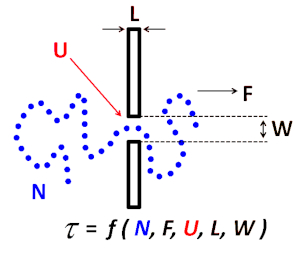
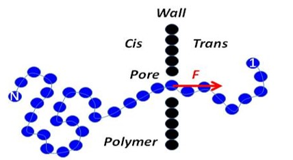
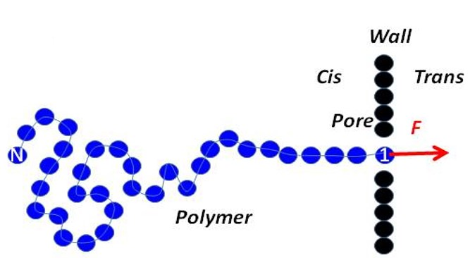
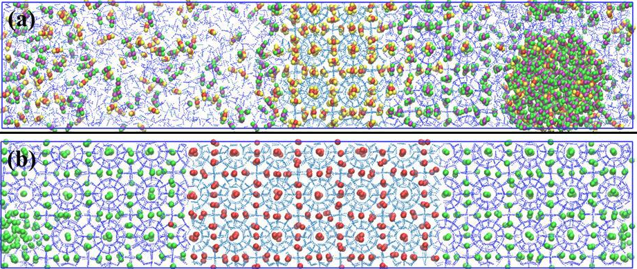

1. Polymer dynamics
Polymer translocation
Polymer translocation is the crossing of polymer through a biological pore. The fundamental understanding of the process is exciting from many inter-diciplinary perspectives such as statistical mechanics, biophysics and computer simulations. It has several technological and biological applications like DNA sequencing, virus genome and drug delivery etc. The dynamics is influenced by many factors.
Broadly, two kinds of experimental realisation of polymer translocation has happened:
- Pore-driven translocation
- End-pulled translocation
The polymer experiences force due to the voltage difference in two sides of a membrane. It is affected by the electrostatic mutation on the pore, different chemical environments like solvents, pH, ions etc.
The polymer is pulled by holding at one end with an optical/magnetic tweezers. Langevin dynamics simulations are helpful to understand the single chain and folded dynamics by calculation of tension propagation, monomer waiting time distributions etc.

2. Crystallization
Although challenging in computer times-scales, the atomistic simulations of crystal growth provide detailed mechanistic view of the process. The crystal growth phenomenon is important in APIs purification, photophysical properties, energy storage in carbon dioxide and methane clathrate hydrates to name a few.
